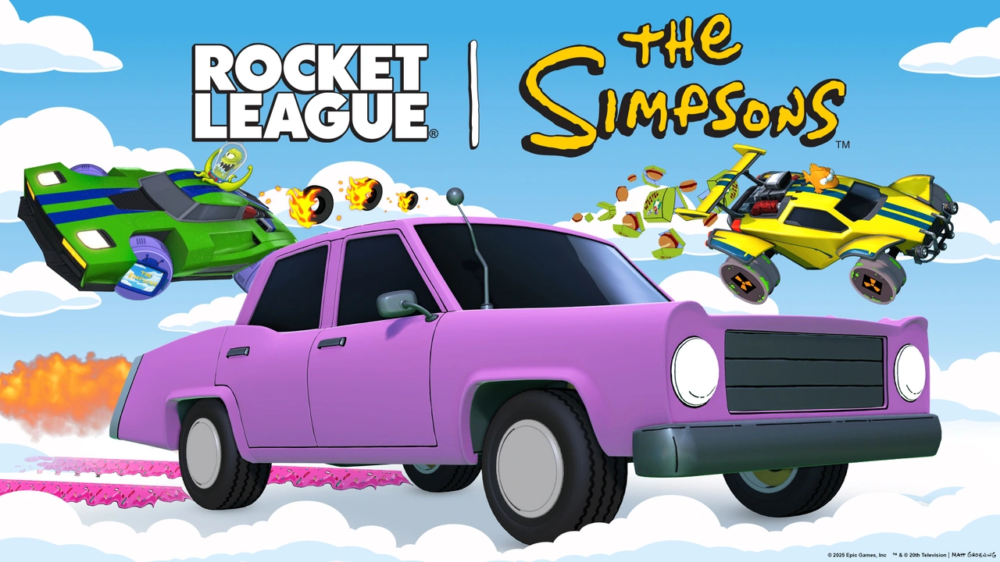

¡Conducid como si estuvieras en Springfield con Rocket League x The Simpsons!
Esta colaboración trae al juego dos nuevos modos de juego que podrás disfrutar durante el evento: Heatseeker y KnockOut. Además, para los jugadores más activos habrán disponibles una serie de desafios que te otorgaran multiples recompensas. El evento durará un total de 3 semanas y durante todo ello se desbloqueará una oferta en la tienda que incluirá el nuevo coche de los Simpsons, un nuevo turbo, una calcomanía especial, unas ruedas animadas y mucho más. ¡Pruebalo ya!